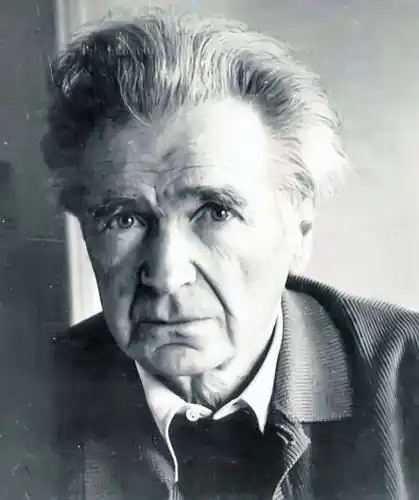
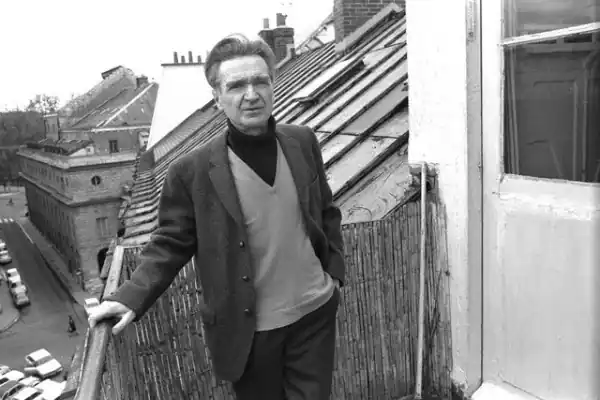

Еміль Мішель Чора́н (фр. Emil Michel Cioran (французька вимова — Сьора́н); 8 квітня 1911, Решінарі, Австро-Угорщина, нині Румунія — 20 червня 1995, Париж) — румунський і французький філософ і письменник. Відомий своїми есе та афоризмами песимістичного спрямування.
Народився в трансильванському селі Решінарі, що належало тоді Австро-Угорщини. Син православного священика, навчався в німецькій школі. Закінчив факультет філології та філософії Бухарестського університету, де затоваришував з Мірчею Еліаде й Еженом Йонеско, світогляд їхнього гуртка склався під сильним впливом німецького культур-песимізму й філософії життя (Шопенгауер, Ніцше, Людвіг Клагес).
З 1932 року Чоран починає публікуватися в румунській пресі, виступає з різкою критикою румунського провінціалізму, гаслами відродження нації, надіями на харизматичного вождя, симпатією до італійського фашизму й німецького нацизму. У 1933—1934 роках зі стипендією Фонду Гумбольдта навчається в Берлінському університеті Фрідріха-Вільгельма і Мюнхенському університеті імені Людвіга Максиміліана, в 1935 році повертається до Румунії, викладає в провінційному ліцеї. Перші книги песимістичної філософської есеїстики написані румунською мовою. У 1937 році зі стипендією Інституту Франції з Бухаресту Чоран їде до Парижа, де оселяється в маленькій мансардній квартирі в Латинському кварталі, в якій мешкатиме до кінця життя. У Парижі відвідує семінари з філософії в Сорбонні, згодом подорожує Францією, Іспанією, Великою Британією — пішки та на велосипеді. Роки гітлерівської окупації проводить в Парижі. Після війни вирішує залишитися у Франції й перейти на французьку мову, повністю пориває з колишніми націоналістичними ідеями. Головні твори: На вершинах відчаю (1934, румунською мовою) Сльози й святі (1937, румунською мовою) Трактат про деконструкцію (1949, французькою мовою, премія Ривароля, німецькою переклав Пауль Целан) Силогізми гіркоти (1952) Спокуса існування (1956) Історія й утопія (1960) Злий Деміург (1969) Нарис реакційної думки. Про Жозефа де Местра (1977) Вправи зі славослів'я (1986) Зізнання й прокляття (1987) Самотність і доля (опубл. 2004) Вправи з заперечення (опубл. 2005)